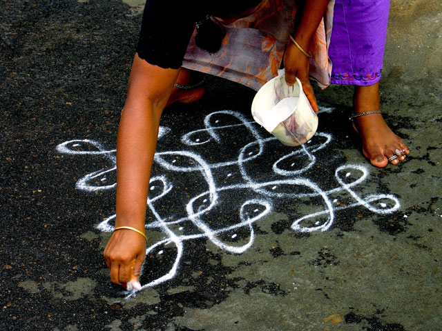
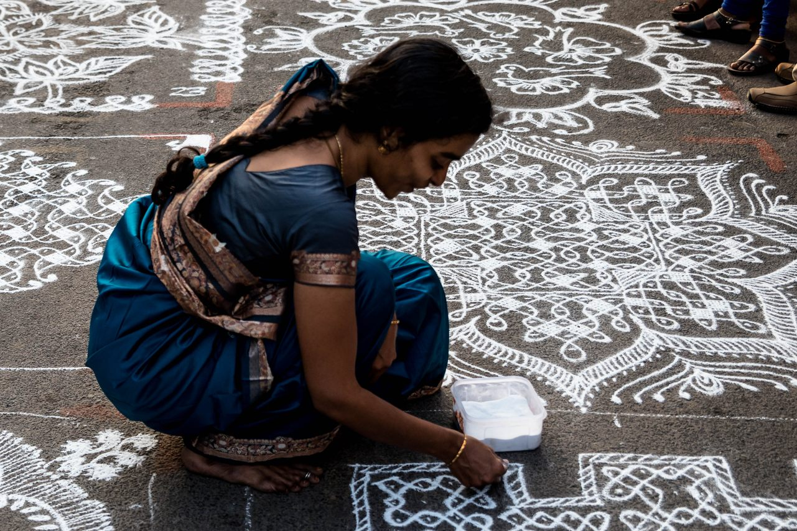
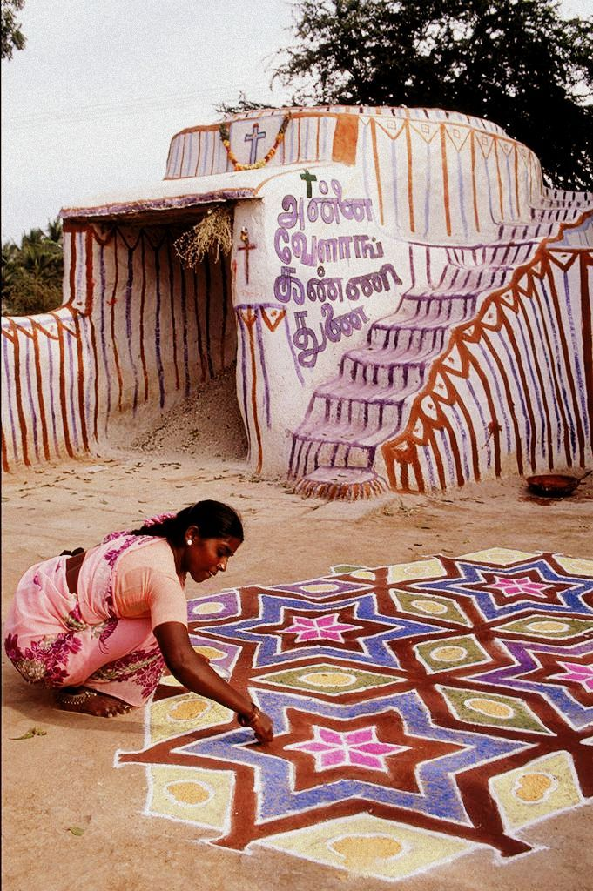

ABOUT!
The creation of a Kolam, a traditional Indian art form, involves an intentionality in every step of the process: from choosing the geometric patterns and colours to its motifs and materials.
Additionally, the physical act of making it, through a tactile and sensory experience, is deeply ingrained in its tradition and cultural significance.
'Anatomy of a Kolam' raises a conversation about bridging human and machine, tradition and technology, probing whether the essence of cultural forms can truly be translated into the language of automation.